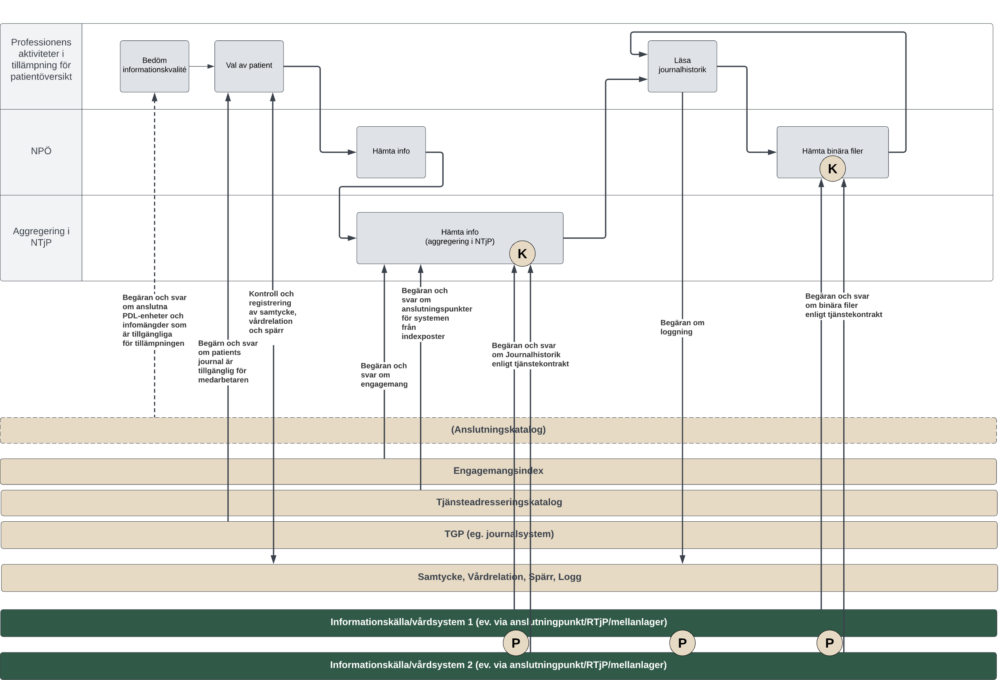
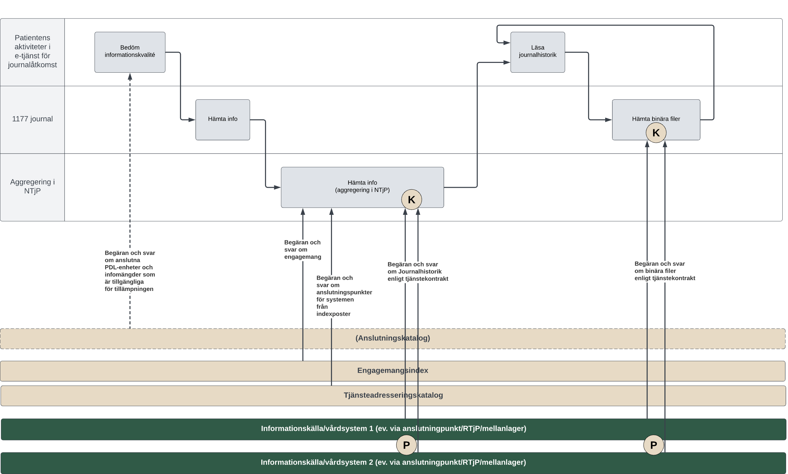
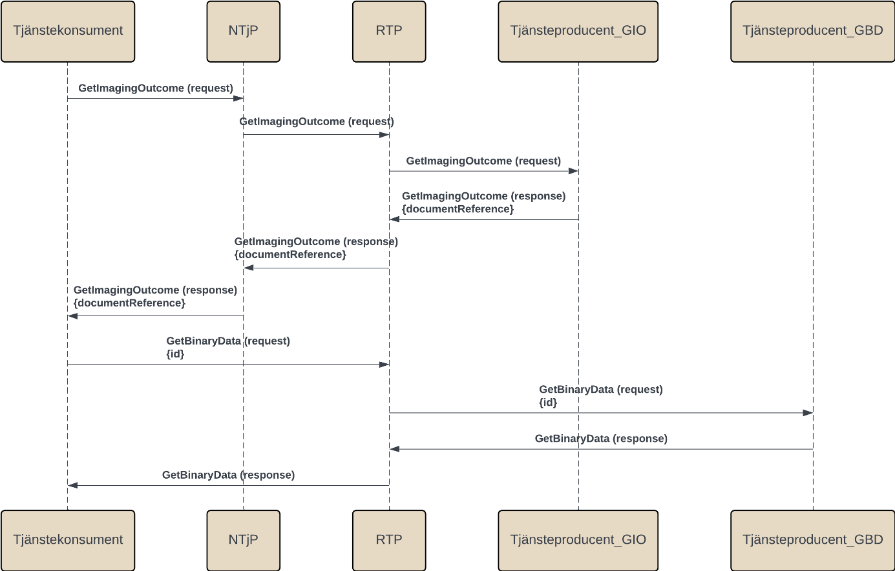
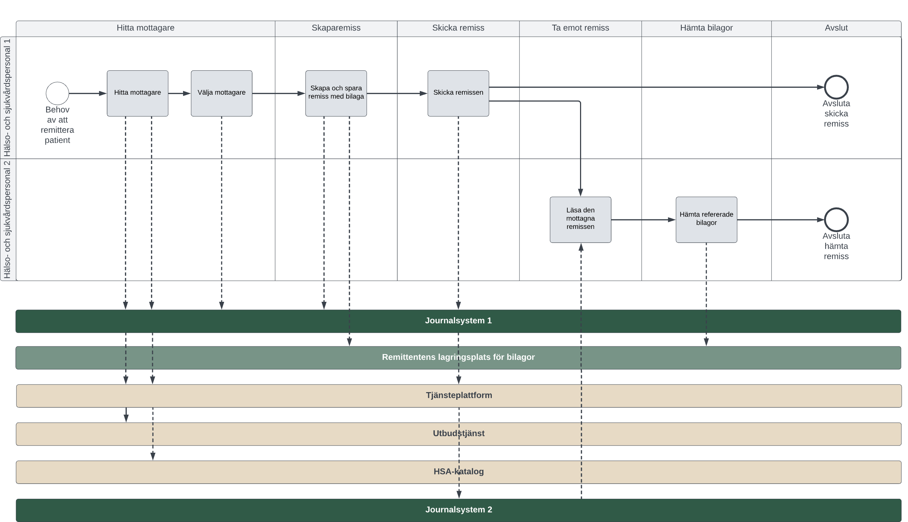
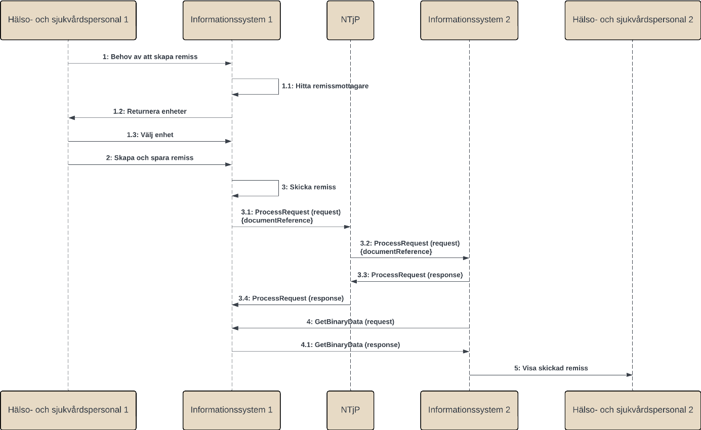

infrastructure: itintegration: dataexchange
1.0.0-draft - draft
infrastructure: itintegration: dataexchange - Local Development build (v1.0.0-draft) built by the FHIR (HL7® FHIR® Standard) Build Tools. See the Directory of published versions
Källa: Tjänstekontraktsbeskrivning för infrastructure: itintegration: dataexchange, version 1.0 (preliminär, gren develop 2025-09-11), TKB_itinfrastructure_itintegration_dataexchange.docx.
Utgångspunkten för tjänsterna i denna tjänstedomän är att kunna hämta binära filer som refererats till i svar på andra tjänsteförfrågningar. Exempel på tillämpningar där detta kan vara aktuellt är för patientens och professionens åtkomst till vård- och omsorgshistorik via Journalen, Nationell patientöversikt, och Elektronisk remiss.
Nedan beskrivs de flöden som är relevanta för tjänstedomänen. Beskrivningarna är i form av modeller, för varje flöde finns dels ett arbetsflöde som beskriver dels vilka steg som ingår i flödet och dels ett sekvensdiagram som tar hänsyn till vilka tjänstekontrakt som nyttjas i de olika stegen.
Nedanstående diagram visar hur flödet principiellt ser ut när information ur kontrakt i tjänstedomänen efterfrågas och hanteras.

Figur 1. Exempel: Hämta binära filer vid behov i tjänsten Nationell patientöversikt - NPÖ.

Figur 2. Exempel: Hämta binära filer vid behov i tjänsten 1177 journal.
| Namn/beteckning | Beskrivning alt. referens |
|---|---|
| Patienten | Den patient som vill få tillgång till information som tjänsterna tillhandahåller. |
| Professionen | Den hälso- och sjukvårdspersonal som vill få tillgång till patientens data. |
Nedanstående diagram beskriver vilka tjänstekontrakt som används i det ovan beskrivna flödet. Tjänstekontrakt som används i exemplet nedan är: GetImagingOutcome för bilddiagnostiska resultat och GetBinaryData för bilagor. Tjänstekontraktet GetImagingOutcome adresseras genom Nationella tjänsteplattformen (NTjP) medan tjänstekontraktet GetBinaryData adresseras direkt till en regional tjänsteplattform (RTP). En referens till bilagor inkluderas i responsen för GetImagingOutcome som innehåller uppgifter för åtkomst till bilagorna med kontraktet GetBinaryData.
I exemplet adresseras en regional tjänsteplattform vid anrop med GetBinaryData men GetBinaryData kan också adresseras direkt till tjänsteproducenten utan att en tjänsteplattform används.

Figur 3. Sekvensdiagram över sökning efter information där GetImagingOutcome används som exempel, men samma princip gäller för alla tjänstekontrakt som refererar till GetBinaryData.
| Namn/beteckning | Beskrivning alt. referens |
|---|---|
| Tjänstekonsument | Det system som används för att konsumera information. Dvs det system som använder tjänster enligt ett tjänstekontrakt. |
| NTjP | Nationell tjänsteplattform hanterar virtuella tjänster, aggregerande tjänster samt anpassningstjänster nationellt. |
| RTP | Regional tjänsteplattform hanterar virtuella tjänster, aggregerande tjänster samt anpassningstjänster regionalt. |
| Tjänsteproducent_GIO | Det system som i detta fall är källsystem för tjänstekontraktet GetImagingOutcome. |
| Tjänsteproducent_GBD | Det system som i detta fall är källsystem för tjänstekontraktet GetBinaryData. |

Figur 4. Exempel: Arbetsflöde Skicka och ta emot remiss med refererade bilagor i tjänsten Elektronisk remiss.
| Namn | Beskrivning |
|---|---|
| Hälso- och sjukvårdspersonal 1 | Den hälso- och sjukvårdspersonal som skapar och skickar remiss |
| Hälso- och sjukvårdspersonal 2 | Den hälso- och sjukvårdspersonal som tar emot remiss |
Nedanstående diagram beskriver vilka tjänstekontrakt som används i det ovan beskrivna flödet. Tjänstekontrakt som används är: ProcessRequest för remisshantering och GetBinaryData för bilagor. Tjänstekontraktet ProcessRequest adresseras genom Nationella tjänsteplattformen (NTjP) medan tjänstekontraktet GetBinaryData adresseras utanför Nationella tjänsteplattformen. En referens till bilagor inkluderas i request-meddelandet för ProcessRequest som innehåller uppgifter för åtkomst till bilagorna med kontraktet GetBinaryData.

Figur 5: Sekvensdiagram för arbetsflödet Skicka och ta emot remiss där tjänstekontraktet ProcessRequest används som exempel, men samma princip gäller för alla tjänstekontrakt som refererar till GetBinaryData.
| Namn/beteckning | Beskrivning alt. referens |
|---|---|
| Hälso- och sjukvårdspersonal 1 | Den hälso- och sjukvårdspersonal som skapar och skickar remiss. |
| Informationssystem 1 | Det system som i exemplet är tjänstekonsument för tjänstekontraktet ProcessRequest och tjänsteproducent för tjänstekontraktet GetBinaryData. |
| NTjP | Nationell tjänsteplattform som hanterar virtuella tjänster, aggregerande tjänster samt anpassningstjänster nationellt. |
| Informationssystem 2 | Det system som i exemplet är tjänsteproducent för tjänstekontraktet ProcessRequest och tjänstekonsument för tjänstekontraktet GetBinaryData. |
| Hälso- och sjukvårdspersonal 2 | Den hälso- och sjukvårdspersonal som tar emot remiss. |
Följande tabell specificerar vilka kontrakt som är obligatoriska att realisera för respektive flöde.
| Tjänstekontrakt | Fråga-svar | Uppdrag-resultat |
|---|---|---|
| GetBinaryData | X | X |
| Tjänstekontrakt som refererar till GetBinaryData | X | X |
Tjänstekontraktet GetBinaryData ska enbart anropas utanför Nationella tjänsteplattformen (NTjP).
Tjänstekonsumenten behöver känna till källsystemets HSA-id (logisk adress) och den URL (teknisk adress) tjänstekonsumenten ska anropa. Såväl logisk som teknisk anslutningsadress hämtas från en referens, se bilaga [R11]. Referensen kan antingen förmedlas till tjänstekonsumenten via svaret på ett anrop till ett annat tjänstekontrakt som tjänstekonsumenten anropat eller som del av ett meddelande som skickats till tjänstekonsumenten på annat sätt.
Aggregering är inte tillämpbart för tjänstekontrakt i domänen.